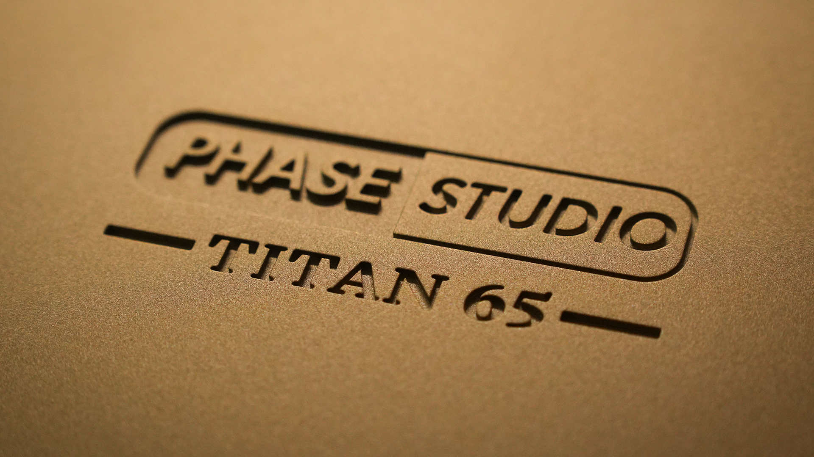
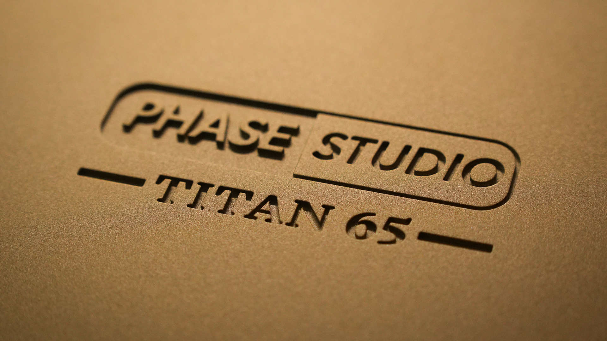
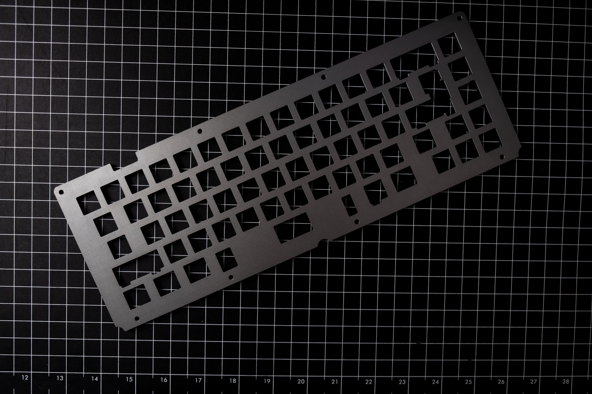
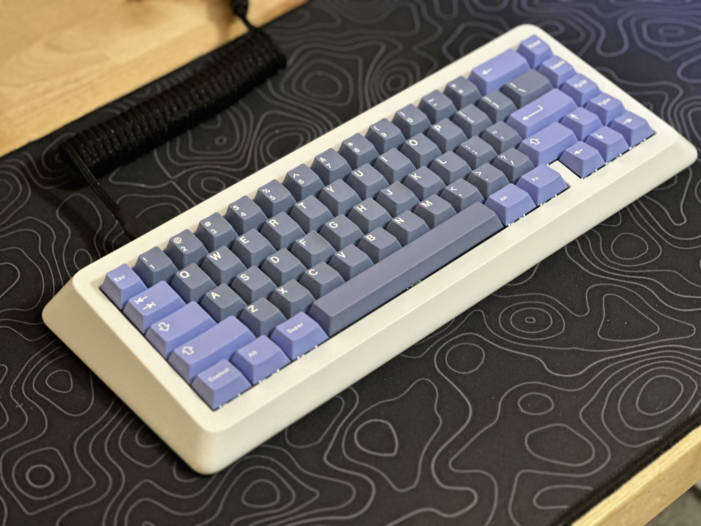
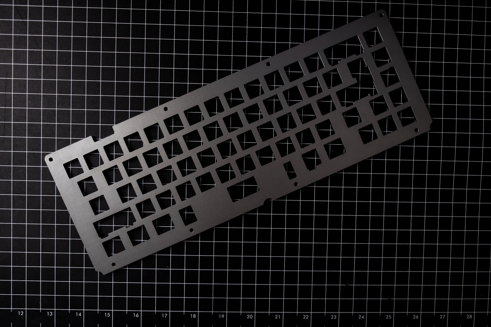
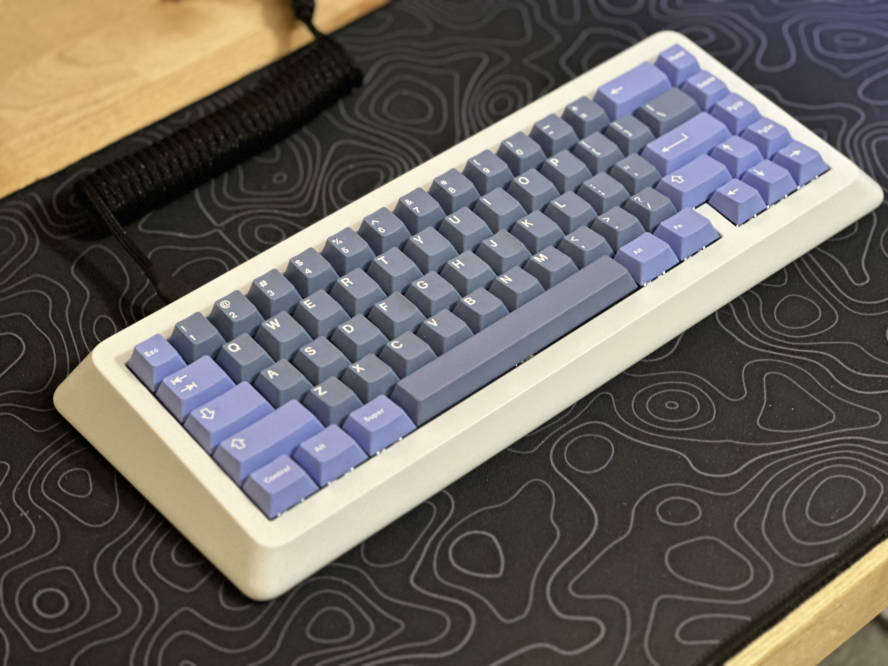

Titan65
Custom Mechanical Keyboard Group Buy
Overview
The Titan65 Group Buy Mechanical Keyboard represents a milestone in enthusiast peripheral design from PhaseStudio. A highly anticipated 65% form factor custom keyboard, the Titan65 was born from a vision to create a premium typing experience with uncompromising build quality.
This project demanded a rigorous journey from concept to reality, involving precision engineering, iterative prototyping, and the coordination of a complex international supply chain. As a design lead, I navigated the challenges of taking a high-end product from initial CAD sketches through to a large-scale Group Buy (GB), ensuring that over 450 units were manufactured to exact specifications and delivered to enthusiasts worldwide.
Technical Specifications
| Form Factor | 65% Compact Layout |
| Materials | CNC Aluminum 6063, Brass (Weighted Base Option) |
| Finishes | Bead-blasted Anodized, E-coating, Passivation / UV Painting |
| Internal | Custom Molded Black Silicone Gaskets (40-50 Shore A) |
Core Responsibilities
Operating as a two-person team meant wearing many hats. Beyond design, my primary focus was establishing the supply chain and ensuring execution.
Sourcing Lead
Identified and vetted specialized manufacturers for CNC aluminum, brass, gaskets, and PCBs.
Manufacturing Logistics
Negotiated quotes, managed Purchase Orders, and overseen strict production timelines across multiple vendors.
Quality Control
Led defect resolution for anodization and surface finishes, implementing UV painting for brass protection.
Distribution
Coordinated international logistics and barcode systems for vendors like Kono Store, CandyKeys, and Deskhero.
Phase 1: Design & Prototyping
Engineering & Standards
I designed the plate and mounting system to provide a consistent typing feel and sound profile, a critical factor for enthusiasts. I also ensured all board dimensions met rigorous industry standards for switch and stabilizer compatibility.
Working with RapidDirect, we ordered multiple rounds of prototypes to perfect these geometries.
We experimented with a variety of finishes and materials to maximize the board's aesthetic and acoustic properties:
- Aluminum Cases: Tested in White, Black, Blue, Purple, Yellow, and raw aluminum.
- Brass Bases: A clear-coated brass weight was designed to add heft and a premium feel.
- Finishes: We evaluated bead-blasted anodization, electrophoretic coating (e-coating) for smoother finishes, and passivation for the brass components.
Component Sourcing & QC
I personally specified and sourced the critical components, including M3/M2 screws, hotswap sockets, and custom 40-50 Shore A silicone gaskets.
Quality Control Challenges: The prototyping phase wasn't without its hurdles. We faced incorrectly milled lettering, color matching issues (specifically with yellow Pantone shades), and dimensional offsets. Deep discussions were held regarding the brass passivation, which initially showed watermarks and oxidation spots. We investigated UV painting as an alternative to ensure a flawless finish.
Phase 2: Manufacturing & Sourcing
This phase involved securing reliable partners to bring the Titan65 to mass production.
Case Manufacturing
RapidDirect remained our primary partner for CNC machining. I maintained constant communication with their team (specifically Tammy Tang and Nanno) to quote and manufacture the complex case geometries and plates.
PCB Production & Diagnostics
We partnered with Dalian JY Electronics & Technology Co., Ltd. for the PCB manufacturing.
I worked closely on the board layout and diagnostics, overseeing the assembly (PCBA) and
firmware
flashing.
The 'Recall' Moment: Initial tests revealed the PCBs were non-functional. I led the
diagnostic process to identify the root cause, requiring an urgent rerouting of the board traces.
This experience was a crash course in crisis management and rapid iteration.
Phase 3: Group Buy & Distribution
The culmination of our work was the Group Buy launch on April 1, 2021. Originally slated for late 2020, we delayed the launch to ensure every manufacturing kink was ironed out.
Global Launch
The response was overwhelming. We sold over 120 units in North America alone on the first day. Approximately 50% of orders included the premium brass base upgrade, validating our material choices.
Beyond logistics, I personally handled customer support for all our direct buyers, addressing technical questions and ensuring a smooth pre-order experience.
Logistics Network
To handle global distribution, we established a network of proxy vendors:
- CandyKeys (EU Distribution)
- Deskhero (Canada)
- Kono Store & iLumkb (International)
Managing this network required navigating complex logistics, including coordinating freight shipments and implementing custom barcode labeling systems for vendors like Kono Store to ensure seamless warehouse receiving.
Manufacturing at Scale
The true test of our logistics capabilities began after the orders were locked. We moved from prototyping single units to managing the manufacturing of over 450 keyboards simultaneously. This massive scale-up required precise coordination with our CNC and PCB partners to minimize defect rates and ensure every unit met our "enthusiast-grade" quality standards before shipping to our international proxies.
Key Achievements & Challenges
Achievements
- Market Validation: Successfully launched the Group Buy, selling over 120 units in North America alone on Day 1.
- Global Delivery: Managed the global logistics pipeline to deliver 450+ units by Q4 2021 despite supply chain constraints.
Challenges Overcome
- Prototyping QC: Overcame specific color matching and brass oxidation defects by pivoting to alternative finishing processes.
- Crisis Management: Diagnosed and resolved a critical PCB defect requiring immediate trace re-routing to ensure functionality.
Community Reception
The project received positive reviews from the mechanical keyboard enthusiast community. See the build and review by Keeb Taro below:
Gallery
 

 


